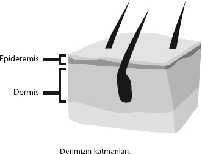

Organ bazında teşhis
Farkındayım, sağlık ve beyin ilişkisi başlı başına bir kitap olacak kadar geniş. Ama size genel bir fikir vermesi açısından beynimizin, duygularımızın ve yaşadıklarımızın sağlığımıza etkisini kısaca da olsa özetlemek istiyorum.
Bu bölümde çeşitli organları ele alıp, onların hangi travmalara neden tepki verdiklerini çok kısaca inceleyeceğiz. Aslında anlatacağım konu, inanın hiç de basit değil ve “ruhani” bir şey gibi de gelmesin. Diğer organlarımız da, bir aslanla karşı karşıya kalan ilk insanın kalbi gibi, çeşitli “tehditlere” milyonlarca yıl öncesinden kalan mantık içerisinde tepkiler vermeye devam ediyor.
Topluluğa karşı konuşma yapmak üzere olan günümüz insanının da aynı savaş/kaç tepkisini verdiğinden bahsetmiştik. Mantık aslında tamamıyla aynı. Yaşanan biyolojik programların 3 ayağının olduğunu, bunların:
1- Psikolojimiz
2- Beynimiz
3- Organımız
seviyeleri olduğunu söylemiştik. Bunun ışığında asıl ilgilendiğimiz soruyu sorabiliriz.
Belli bir travmaya hangi organ tepki veriyor?
Ve başka bir organ değil de, neden
o organ tepki veriyor?
Cevap şu: Beynimiz travmaları belli ilkel tepkiler çerçevesinde yorumluyor ve nasıl bir tepki gerektiğine göre hangi organımızın devreye gireceği anlık olarak belirleniyor.
Organların verdiği tepkilerin tümü savunma, koruma amaçlı ve hepsi de iyi niyetli. Ama ne yazık ki, bu tepkilerin tabiri caizse biraz “demode”, çok eskiden kalma olduğunu da kabul etmek gerek...
Şimdi size, bu yetmezmiş gibi konuyu daha da karmaşık hale getiren bir şey söyleyeceğim: Aslında, aynı organın tüm dokuları belli bir tür tehdit unsuruna bir bütün halinde aynı tepkiyi vermiyor. Aynı organın farklı bölümleri, farklı tür travmalara bağımsız olarak tepki veriyorlar!

Mesela, derimizin iç kısmı olan “dermis” fiziksel ya da kişisel saldırılara tepki verirken (amacı saldırılara karşı deriyi yani kalkanı güçlendirmek), dış derimiz yani “epidermis” sevdiğimiz bir yakınımızdan ayrılmamız gibi travmalara tepki veriyor (amacı sevdiğimiz kişi bizden ayrı olduğu için deride hassasiyet kaybı yaratarak acıyı azaltmak).
Bununla ilgili diğer bir unsur da şu: Belli bir organın bütün fonksiyonları beynin aynı yerinden de kontrol edilmiyor. Yukarıdaki örnekten yola çıkarsak, iç derimiz beynimizin “cerebellum” kısmından (eski beyin), dış derimizse korteksten kontrol ediliyor.
Sizin de fark ettiğiniz gibi, ilk gelişen derimiz olan “dermis”in “savunma” önceliği ortaya çıkmış olduğu döneme ait. Zaten o döneme ait beyin tarafından kontrol ediliyor.
Epidermis daha çok sosyal yani çok daha gelişmiş ihtiyaçlarımızla ilgileniyor. Ve ortaya çıktığı dönemde gelişen daha yeni beynimiz “korteks” tarafından kontrol ediliyor.
Kabul ediyorum... Vücudumuzun işleyiş mantığını anlatmanın sonu yok. Ama şunu söylemeliyim ki, eğer üzerinde çalıştığınız konuda çözüme bir türlü ulaşamıyorsanız, “detaylar” bazen hayat kurtarabiliyor.
Beynimizle organların nasıl bir bütünlük içinde çalıştığı aslında çok yeni bir konu. Sizinle paylaştığım bilgiler ne yazık ki hiçbir “klasik” biyoloji ya da tıp kitabında bulunmuyor. Özellikle de Batı tıbbının, konuya beyin açısından yaklaşması ve bu bilgileri yaygın hale getirmesi birkaç yüzyıl dahi alabilir. Biz kimileri için enteresan olabilse de, kitabımızı nüfusun yüzde 99’u tarafından sıkıcı bulunabilecek bir biyoloji kitabı haline getirmeyelim.
Genel amacımız, herhangi bir şikâyetimiz varsa bunun yaşadığımız hangi olaydan kaynaklanmış olabileceğini bulmak. Bunu yapabilmek için de bir şekilde “seçenekleri” daraltmamız gerekiyor.
Bu arada, biz çok nadir olarak bir travmanın hangi organlara etki yapacağıyla doğrudan ilgileniriz. Bizimkisi daha çok tersten sorulmuş bir soru, zira karışmış bir balık oltasını açmaya ve biraz detektiflik yapmaya çalışıyoruz. Sorduğumuz soru şu:
Rahatsızlığımıza sebep olan organ, hangi tür bir travmadan etkilenmiş olabilir?
Bu bir kayıp mı? Terk edilmek mi? Anlık ölüm korkusu mu? Cinsel bir utanç mı? Fiziksel bir tehdit mi?
Rahatsız olan vücut parçasını doğru olarak bilmemiz, ne tür bir travma aramamız gerektiğini söyleyecek, bir bakıma olasılıkları daraltacak, biz de hayatımızdaki hangi olayı formatlamamız gerektiğini daha net görmüş olacağız.
Aşağıda organlarımızın (gerektiğinde farklı dokularının) hangi tür travmalara tepki verdiğiyle ilgili genel bir tablo bulacaksınız. Eğer hiçbir şekilde çözüm bulamadığınız bir rahatsızlık üzerinde çalışıyorsanız, hangi tür travmayı temizlemeniz gerektiğini aşağıdaki tabloda basit haliyle bulabilirsiniz.
Bu arada yeri gelmişken, benzer bir çalışmayı yıllardır iyi niyetle yapan Amerikalı yazar Louise L. Hay’kilerden çok daha farklı bir tabloyu karşınızda bulacaksınız. Kendisinin doğru bir alanda ilerlemesine rağmen, duygular ve sağlık arasındaki bağlantıyı bilimsellikten uzak ve oldukça ilkel şekilde kurduğunu, bulduğu sonuçların çoğunun da yanlış olduğunu düşünüyorum.
Sizinle bu bölümde paylaştığım bilgiler, özellikle Avrupalı doktorlar arasında filizlenmiş, son 10 yıl içerisinde büyük ivme kazanmış çok önemli çalışmaların ürünüdür.
Kitabın konusu açısından detaylara giremesem de, böyle kapsamlı bir listeyi sorunlarınızın çözümünde ışık tutması, travmalarınızı doğru şekilde bulmak ve çözmek konularında size rehberlik etmesi açısından veriyorum.